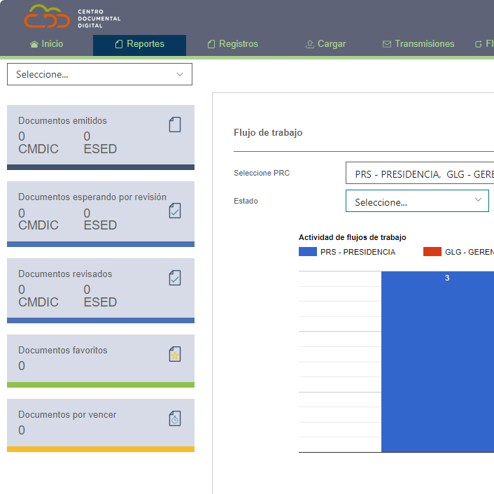
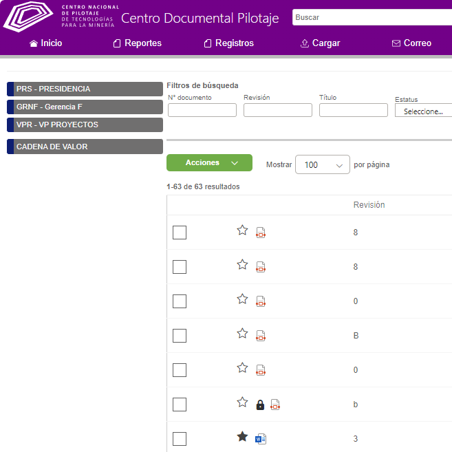
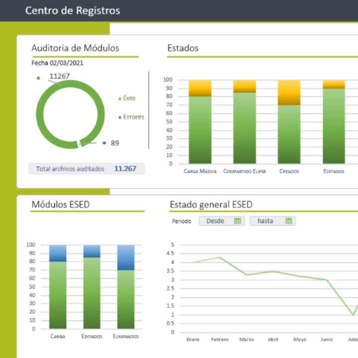
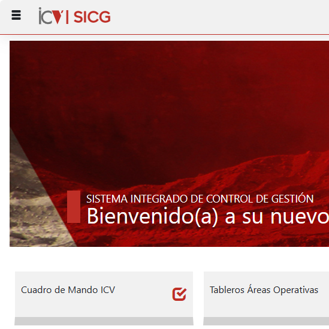
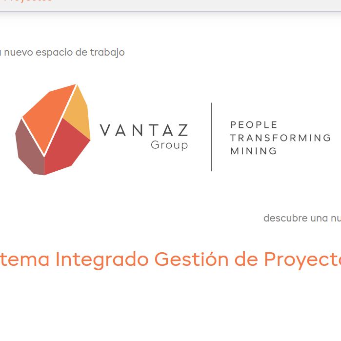
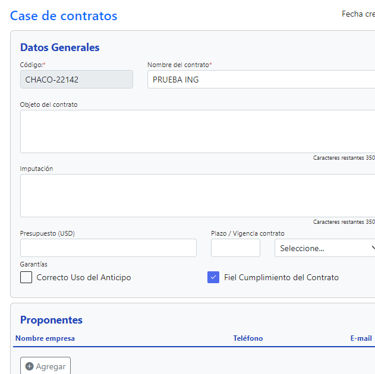
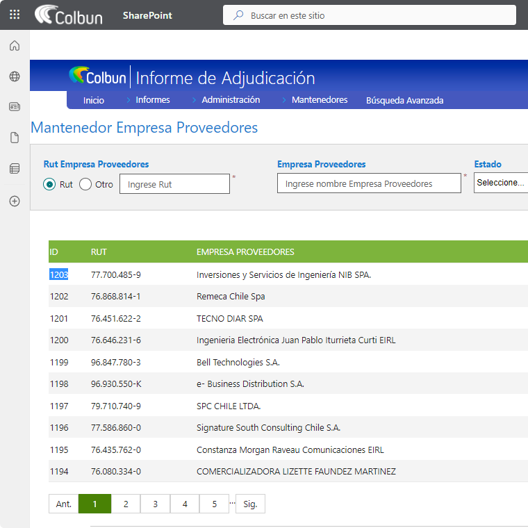

Thomás Enrique
Full Stack Web Developer
Tecnologías principales
Gran experiencia en
Portafolio
Que es lo que he hecho.

Centro documental digital
Sistema para Collahuasi, utilizado para gestionar la
documentación empresarial en diversos grupos de usuarios
administrables.
#ReactJs #C-Sharp #.NETCore #SharePoint #Microsoft-Fluent-UI #LogicApps
#ReactJs #C-Sharp #.NETCore #SharePoint #Microsoft-Fluent-UI #LogicApps

Centro documental Pilotaje
Clon del sistema Centro documental digital
donde realice la adaptación de un sistema completo para las
necesidades del cliente.
#ReactJs #C-Sharp #.NETCore #SharePoint
#Fluent-UI #Mejoras #Soporte #LogicApps

CCR
SISTEMA DONDE DESARROLLE EL MÓDULO DE Reportería PARA QUE EL
CLIENTE PUEDA ENTENDER LAS FUNCIONALIDADES MÁS UTILIZADAS POR SU
ORGANIZACIÓN, LA RELACIÓN DE ÉXITO Y FALLO DE LAS EJECUCIONES,
LA POSIBILIDAD DE FILTRAR POR RANGO DE FECHAS Y EXPORTAR A EXCEL
LOS DATOS.
#C-Sharp #.NETCore #CSS $HTML
#C-Sharp #.NETCore #CSS $HTML

Ingeniería Civil Vicente - ICV
Sistema al cual participe en las mejoras a la presentación y
procesado de datos, mejorando significativamente el aspecto
visual y el rendimiento del sistema.
#ReactJs #C-Sharp #NETCore #SharePoint #Kendo-Telerik
#ReactJs #C-Sharp #NETCore #SharePoint #Kendo-Telerik

Vantaz
Mejoras, mantención y soportes al sistema encargado de la
rendición de gastos de distintas areas del cliente.
#ReactJs #C-Sharp #NETCore #Mejoras #Soporte
#ReactJs #C-Sharp #NETCore #Mejoras #Soporte

Case de contratos
Desarrollo completo del sistema encargado de la administración
de toda la documentación de los contratos del cliente
#ReactJs #SharePoint #LogicApps
#ReactJs #SharePoint #LogicApps

Informe de adjudicación
Mejoras, mantención y soportes al sistema encargado de las
adjudicaciones de Colbun entregadas a sus proveedores
#ReactJs #SharePoint #LogicApps #Mejoras #Soporte
#ReactJs #SharePoint #LogicApps #Mejoras #Soporte
Contacto
- Peñalolen, Santiago de Chile
- +569 9900 5342
- thomas.mino.97@outlook.es
- Perfil Linkedin